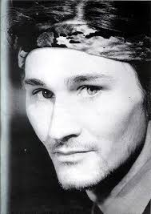

Bojan Pečar
Bojan Pečar
bio je srpski muzičar, slovenačkog porekla, najpoznatiji kao basista beogradske rok grupe Ekatarina Velika. Rođen je u Beogradu od oca Srećka (1929-2002) i majke Vukice (1933-2005). Bio je brat psihologa Irene Pečar-Pavićević (1968 — 23. februar 2013). Završio je Petu beogradsku gimnaziju, a paralelno je išao i u Muzičku školu. Prvi bend u kom je svirao je bio „BG 5“, zatim je prešao u bend „VIA Talas“. 1982. godine je došao u grupu Ekatarina Velika. U njoj je ostao do 1990. godine kada je otišao u London gde je svirao u bendu „Mišn“ i Lost Children sa Dušanom Kojićem - Kojom (Disciplina kičme). Bojan se u slobodno vreme bavio i slikarstvom.
„Ja sam bas naglo izrastao, izdzigljao, i to u drugom razredu gimnazije. Posle violine, presao sam na violu. Kod kuce sam poceo da sviram bas gitaru. U to vreme upisao sam kontrabas, cisto da bih naucio i taj instrument. Sviram gitaru, ali sam ostao veran svojim instrumentima s'cetri zice.”
Iz intervjuaCAO
"CAO: -A, kad se pojavio prvi bend?
BOJAN: -Prvi put je bilo u gimnaziji, 2 razred. Moj drug, Enes i ja, s' pardrugova, napravili smo gimnaziski orkestar, koji se zvao "BG 5". U to vreme postojao je i bend "Limunovo drvo" u kojem je bio i Milan. Postojala je grupa "Tarkus" s'Bebi Dol- Draganom Saric i Marinom Svabic. Okupljali smo se oko Doma omladine. U to vreme bilo je i "Beogradsko leto", ako se secas pa smo satima cekali-do kasno u noc-da bi smo svirali negde u sitne sate... Bili smo prateci bend Preletu (Prelevicu). Mi smo bili klinci, a on je bio "veliki" pa je to nama, naravno, mnogo znacilo. A dosta dobro smo svirali, cak iz nota, sto je za to vreme bilo vrlo retko - a i danas je... Klinci od sesnaest-sedamnaest godina pa sviraju iz nota?! Tako, to je bio moj prvi bend. Posle sam, kao pravi, rekao da mi je kao, dosta svega, i onda sam zajedno s'tadasnjom devojkom Mirom napravio bend. Prvo nas je bilo vise u bendu da bi smo, na kraju ostali samo Mira i ja - kao duo. Bio sam mlad i imao sam neki pop-zvuk u glavi, u to vreme naravno. Snimili smo i plocu, koja se zvala "Perfektan dan za banana-ribe". Bio sam fasciniran Selindzerovim pricama u to vreme, i dao sam - u tom stilu - i ime ploci. Kad je ta ploca izasla, pojavila se, u to vreme i grupa "Katarina II": Gagi, Milan, Dule svirali su ono, na nekim marginalnim svirkama na Topciderskom brdu, i tako dalje... Medjutim, sve je to bilo dosta neozbiljno. Prakticno, bend postoji od momenta kad smo Margita i ja dosli u bend, pa smo tako nas troje postali srz benda, a bubnjare, kao sto znas menjamo i to cesto (smeje se).
CAO: -A kako ste se vi nasli, kako ste se osetili da mozete zajedno, i to tako sjajno.
BOJAN: -Mislim da je to vise bio srecni slucaj. Dule je hteo da prekine sa "Sarlom", pa su svi otisli "kud koji mili moji". Milan je pitao Margitu, pitao mene, pa smo se tako jednog dana okupili u "Dadovu", kao na nekoj probi. Oni su imali dve-tri gotove pesme, od kojih je sve i pocelo. Kasnije svi smo se ukljucili u stvaranje pesama. Bili smo uporni. Svirali smo.
CAO: -Prepostavljam da vam nije trebalo mnogo vremena da se uigrate jer ste, ipak bili dobri muzicari...
BOJAN: -Naravno, znali smo jedni za druge: znali smo da postojimo kao muzicari. Bilo je i nesto cudno u svemu tome. Svo troje smo bili totalno razliciti: interesovanja su nam bila, u to vreme, vrlo razlicita.